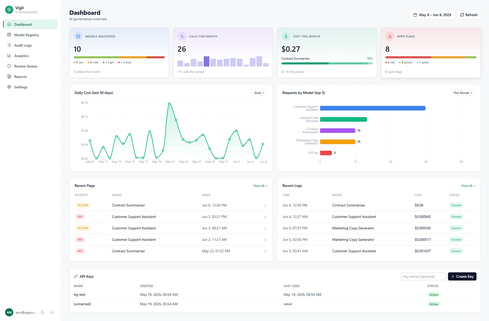

An open-source, self-hostable platform that gives teams running LLMs in production the observability, safety scanning and audit trails that enterprises pay $500K+ for. Governance-first by design, with built-in mapping to the NIST AI Risk Management Framework and a one-command Docker deploy.

Mid-sized teams ship LLM features fast, but fly blind: no central record of what models are deployed, no automated safety scanning on real traffic, and no audit trail when something goes wrong or a compliance question lands. The tools that solve this (enterprise AI governance suites) start around $500K/year. Vigil closes that gap with a free, self-hostable platform you can stand up with a single docker compose up.
Five capabilities, each mapped to a real governance need.
Central record of every deployed model: owner, deployment date, use case, and a Low/Medium/High/Critical risk tier that drives the NIST-aligned dashboards.
Server-side cost computation across 249 models from the LiteLLM catalog (refreshed daily), plus p50/p95/p99 latency analytics via PostgreSQL window functions.
PII detection (Microsoft Presidio), toxicity (OpenAI Moderation) and prompt-injection pattern matching, producing typed flags with confidence scores and GREEN/YELLOW/RED severity.
Severity-based triage for flagged interactions with a reviewer sign-off workflow: notes, recorded email, and an outcome of safe, issue_found or escalated.
One-click PDF reports that map audit data to the four RMF functions (Govern, Map, Measure, Manage), rendered with WeasyPrint via async generation and status polling.
A single drop-in call at the LLM invocation point. Synchronous, 2-second timeout, and it never raises on logging failures, so it cannot add latency or risk to the host app.
The hard constraint: governance instrumentation must never slow down or destabilise the host application. So the ingest path is tiny and synchronous, and every expensive safety check runs asynchronously after the response is already returned.
from aigovkit import AIGovLogger
logger = AIGovLogger(api_key="sk_...",
model_id="<uuid-from-registry>")
response = logger.call(
provider="anthropic",
model="claude-haiku-4-5",
messages=[{"role": "user",
"content": "Hello"}],
user_id="user_123",
)# ingest path (< 50ms)
SDK ─▶ FastAPI /api/logs
├─▶ hash API key
├─▶ price lookup (249 models)
└─▶ write row ─▶ PostgreSQL ─▶ 201
# async, after the response
BackgroundTasks ─▶ Safety Scanner
PII · toxicity · injection
└─▶ safety_flags ─▶ Review Queue
Redis ─▶ rate limiting · caching
PostgreSQL ─▶ React dashboard + PDF reportsSix views from the live application. Click any screenshot to enlarge.
Running PII, toxicity and injection checks inline would blow the latency budget. Moving them to FastAPI background tasks, after the 201 is returned, keeps ingest under 50ms while still flagging everything for the review queue.
An early lesson: I built the dashboard before there were SDK users, which shaped the product prematurely. The SDK is the component that lives inside customer code, so it is where real feedback comes from. It is designed to be impossible to break a host app with: it never raises and times out in two seconds.
Tools like Langfuse and Helicone treat governance as secondary to tracing or cost proxying. Vigil inverts that: NIST AI RMF compliance is the first-class feature, shipped MIT-licensed with no cloud pricing tiers.